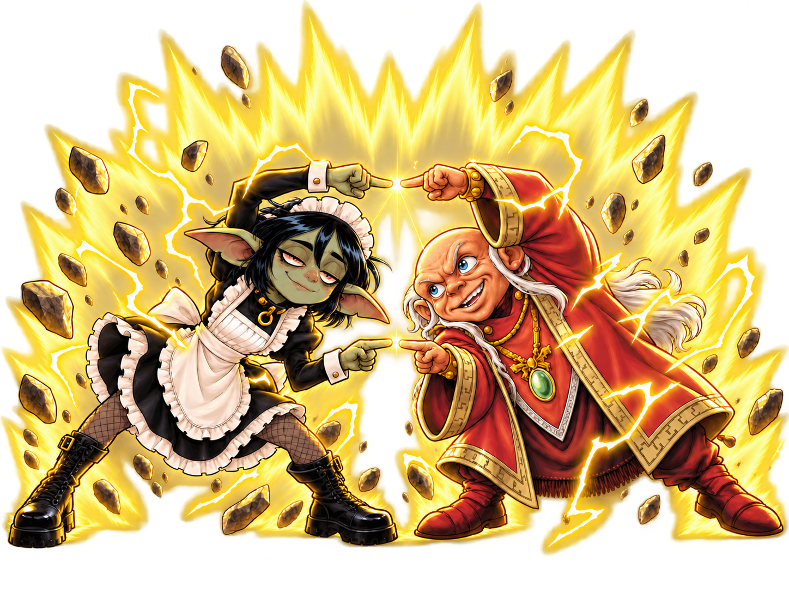

At your service
A good GM
has a plan.
And someone who remembers
every modifier.
The books are open. The heroes are ready. Someone asks about the frightened condition again. That is where the maid comes in: everything you need to run Pathfinder 2e lives in one app.
